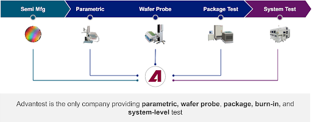

By Davette Berry, Senior Director of Business Development, Advantest
As the sophistication of semiconductors continues to grow, so does the need for system-level test (SLT) in production to ensure that high-performance processors, chiplets, and other advanced devices function as expected in real-world environments. Once seen primarily as a fallback to catch what traditional automated test equipment (ATE) missed, SLT has now become a mission-critical step for validating AI accelerators and central, graphical and application processing units (CPUs, GPUs, and APUs) before market release. It’s increasingly being evaluated for use in production of devices like network and automotive processors—where reliability is non-negotiable. However, implementing SLT at production scale introduces new complexities in balancing cost, throughput, and test coverage.
While ATE works by driving known test patterns to stimulate in-chip circuitry and observe expected internal responses, SLT, in contrast, looks at how the chip behaves as part of a larger system, focusing on interactions across cores and peripherals, including aspects like power regulation and sensor behavior. This means that SLT platforms must support a broad mix of application-level use cases and interfaces, especially when testing cutting-edge semiconductors.
This requirement grows even more pressing with the rise of chiplet-based design strategies. Instead of assessing a single chip in isolation, SLT can evaluate the communication between multiple dies in a single package. This ability to help validate cross-chip data paths and their impact on power, performance, and reliability is a key advantage of SLT. However, many SLT deployments still rely on manual methods of creating the test content, which limits their scalability.
Overcoming coverage gaps
Electronic design automation (EDA) companies have helped chip designers automatically generate structural test patterns to achieve close to 99% transistor coverage. With today’s 100-billion-transistor AI processors, this coverage still leaves a billion transistors unchecked. Closing this last 1% gap using only ATE is an expensive, time-consuming effort, often requiring months of development time.
Furthermore, chiplet integration introduces new mechanical and thermal challenges. With fewer external access points, test engineers must route signals through complex, multi-die pathways. These large packages can warp, complicating socket alignment and risking poor (device-under-test) DUT connectivity. Under load, heat spots form across tightly integrated dies—an issue that demands close coordination between thermal control, actuation mechanics, and power sequencing in the SLT system.
SLT implementation also requires cross-disciplinary cooperation. Test content needs to be co-developed and validated by stakeholders across the ecosystem—equipment and socket vendors, silicon designers, OSATs, and application board manufacturers, along with end-users like hyperscale data center operators or smartphone OEMs. The SLT test station must authentically replicate the device’s actual operating environment.
As power demands rise, testing infrastructure must keep pace. SLT test times can last 30 minutes or more, pushing facilities to deploy dense configurations of testers within space- and energy-efficient layouts. At the same time, the DUTs and their supporting hardware continue to grow in size and complexity.
Advances in test methodology
The chip industry has responded with new design for test (DFT) methods that deliver test data over high-speed serial interfaces—like USB or PCIe—rather than parallel pin scan chains. During SLT, once these ports are activated and enumerated, test programs can operate through them to trigger built-in tests or deliver packetized patterns, minimizing pin requirements while maximizing coverage.
Once validated, this structural test content can be correlated across various platforms—ATE, SLT, and post-silicon validation—improving debug efficiency and accelerating time to market. Advantest supports this with platforms like Link Scale and our new SiConic™ system, helping unify the test and validation landscape.
Thermal management remains a universal concern. Testing power-hungry processors in aggressive workloads stresses both the DUT and the test infrastructure. Solutions today span from traditional air cooling to advanced liquid and refrigerant-based systems, all while emphasizing environmental sustainability. SLT handlers must support repeated thermal cycling and actuation without compromising electro-mechanical stability or DUT safety.
Machine learning and AI bring fresh opportunities to optimize test operations. Advantest’s platforms, now equipped with Real-Time Data Infrastructure (RTDI™), deliver fast, secure access to test data, empowering AI tools to enhance yield and resource utilization.
Advantest’s integrated SLT offering
Advantest delivers a cohesive ecosystem of SLT solutions tailored to modern semiconductor demands. Our lineup includes ATE handlers, lab-grade engineering testers, and full-scale SLT systems, all designed with shared physical and thermal interfaces to simplify correlation and integration.
Our thermal systems will support up to 5000 W per DUT and enable multizone thermal management, with programmable set points that adapt dynamically during test cycles. These capabilities are essential for maintaining test fidelity in the face of rising power levels and integration density.
In the past, some chipmakers had no choice but to build their own SLT test setups from scratch. Advantest now offers turnkey SLT test cells that integrate all critical components—test execution, thermal and power control, mechanical handling, and test content delivery—backed by our global service infrastructure. These systems ensure every test cell remains consistent, controlled, and up to date.
We work directly with customers to simulate how packages will behave thermally and mechanically during test. This includes modeling warpage, compression, and power dynamics—all of which are crucial for validating new packaging formats, including future designs like co-packaged optics.
A Software Suite for End-to-End Device Control and Holistic Test Cell Management
To orchestrate all this complexity, Advantest offers ActivATE360™, our integrated software suite for SLT and burn-in systems. The platform includes:
- Studio360 – a complete integrated development environment and software development kit for test program development and test hardware control.
- Device360 – for managing DUT communication and executing binaries, test contents and test flows.
- Cluster360 – enables real-time, cross-platform messaging with support for multiple languages and application interfaces.
- Cell360 – to manage distributed test cells and process lots and generate operator instructions.
- Facility360 – for monitoring and optimizing test operations at the facility level.
ActivATE360 seamlessly communicates with Advantest Cloud Solutions (ACS) and SmarTest 8 software for ATE, enabling real-time data sharing, unified debug, and cross-insertion test correlation. Used with hardware like Link Scale and SiConic, these tools help accelerate validation and close the loop from silicon design to high-volume production.
Delivering SLT at Scale
With decades of expertise in building high-throughput test systems, Advantest is well-positioned to meet the demands of system-level testing. Our robust handlers and SLT systems are built for longevity, mechanical precision, and thermal performance—while maintaining uptime in high-volume environments. Whether you’re testing massive AI chips or future-ready chiplet systems, Advantest ensures that every SLT investment delivers maximum value, scalability, and support.